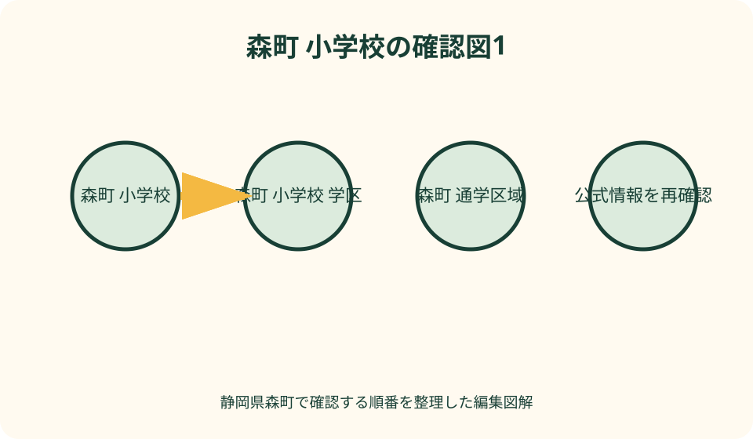
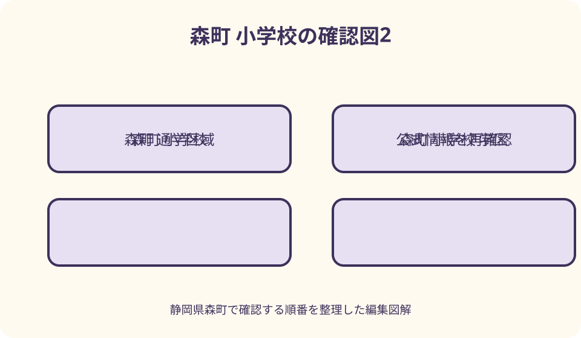

子育て・学校｜最終確認 2026-08-10
静岡県森町の小学校・通学区域確認ガイド｜転入・指定校変更・通学安全
静岡県森町の町立小学校は、町公式の現行一覧では森小学校、宮園小学校、飯田小学校の3校です。就学先は住所を基に森町立小中学校児童生徒の通学学校指定規則で指定されるため、地図上で近い学校を自己判断せず、番地・集合住宅名・転居予定日を森町教育委員会学校教育課（0538-85-1112）へ伝えて確認します。指定校変更は申立てに基準と添付書類があり、許可を保証するものではありません。旧三倉・天方地区を含む通学バスの停留所や時刻、再編後の運用も年度ごとに確認し、徒歩経路と災害時の引渡し経路を別々に試走してください。

現在の三校を確認する——旧校名を現役校と混ぜない
森町公式の小学校・中学校案内は、町立小学校を森小学校、宮園小学校、飯田小学校の三校と掲載しています。検索結果に旧三倉小学校や旧天方小学校が出ても、現在の就学先一覧へそのまま加えません。
森小学校は森一二五、宮園小学校は谷中六五〇、飯田小学校は飯田三三一〇番地の一です。校名が住所の大字と一致するとは限らず、自宅から最短距離の校舎が指定校になるとも限りません。
三倉小学校と天方小学校は二〇二一年三月末に閉校し、同年四月に森小学校へ統合されたことが町の統計と統合準備資料で確認できます。古い不動産資料、地図、避難所名に残る校名を通学先として使いません。
この記事の学校数と手続は二〇二六年八月十日に森町公式を確認した内容です。学校再編や通学区域は将来変わり得るため、入学年度と転居日を伝え、教育委員会の最新回答を最終確認にします。
住所から指定校を調べる——番地まで教育委員会へ伝える
就学すべき学校は、森町立小中学校児童生徒の通学学校指定規則に基づいて指定されます。郵便番号や地区名だけで境界を判断せず、契約予定の番地、枝番、集合住宅名、部屋番号まで用意します。
同じ大字でも通学区域が分かれる可能性や、町内会名と住居表示が一致しない場合があります。地図サービスの推定学区や物件広告の表記を証明とはせず、学校教育課へ現行規則上の指定校を照会します。
照会時は、子どもの生年月日、現在の学年、転居予定日、新入学か転校か、きょうだいの在籍校も伝えます。住所だけの質問より、就学時点を明示した方が必要な通知と手続を案内してもらいやすくなります。
電話で聞いた結果は、確認日、担当課、住所、指定校、次の書類をメモします。引越し時期が延期したり物件が変わったりしたら、以前の回答を流用せず新住所で再確認します。
三校の所在地を比べる——学校評価や住宅価格へ結びつけない
森小学校、宮園小学校、飯田小学校は、それぞれ町内の異なる生活圏にあります。所在地は通学時間を見積もる入口ですが、校舎周辺の見た目や児童数だけで教育の良し悪しを順位付けしません。
学校ホームページでは行事予定、警報時対応、学校だより等を確認できます。ただし特定年度の活動写真を恒久的な教育内容とみなさず、入学年度の説明会や学校からの通知を優先します。
学区を理由に土地や住宅の資産価値が上がる、下がるとはこの記事では扱いません。通学区域の変更、学校再編、家庭の事情で就学先は変わり得るため、教育手続と不動産判断を切り離します。
学校を比較する必要があるのは、指定校変更を当然視するためではなく、通学手段や必要な配慮を教育委員会へ具体的に相談するためです。学校への無断訪問や授業中の撮影はせず、見学可否を事前に尋ねます。

新入学の時系列——健診、通知、説明会、入学式を分ける
森町公式は、翌春の小学校入学予定児を対象に十月と十一月に就学時健康診断を実施し、対象保護者へ通知すると案内しています。日程は年度ごとに確認し、転居予定者は受診自治体を相談します。
入学通知書は一月末日までに保護者へ送付する案内です。届かない、氏名や住所が違う、転居予定がある、私立等を検討している場合は放置せず、学校教育課へ早めに連絡します。
学校説明会では、学用品、給食、通学班、連絡方法、健康情報、特別な配慮、入学式の受付を確認します。過年度のきょうだい用品が使えるかは、仕様変更を考えて学校へ尋ねます。
入学式当日は入学通知書を受付へ提示する案内があります。紛失、転居直後、通知未着の場合は式当日に説明するのではなく、事前に再発行や代替確認の具体的な方法を聞きます。
転入の順序——住民生活課から教育委員会、学校へ進む
町外から転入する場合、森町公式は住民生活課で転入手続を行った後、教育委員会へ行く順序を案内しています。教育委員会が転入学通知書を発行し、指定された学校へ提出します。
前の学校から在学証明書と教科書無償給与証明書を受け取り、森町教育委員会の転入学通知書と合わせて新しい学校へ提出する流れです。書類名が似ているため、発行元ごとに封筒を分けます。
転校日は住民異動日、学期、前校の最終登校日、森町での初登校日を調整します。引越し当日から自動的に登校できるとは考えず、給食、教材、健康情報、通学班の準備日を学校へ確認します。
転居前に学校教育課へ相談しても、正式な転入学通知は住民異動後になる場合があります。事前相談と正式決定を区別し、物件契約時の口頭回答だけで入学を確約されたと受け取りません。
町内転居と転出——在籍校へ先に日程を伝える
町内転居で指定校が変わる可能性がある場合は、新旧住所、転居日、学期終了日、子どもの学年を学校教育課へ伝えます。住民票を動かした後に初めて相談するより、予定段階で必要な申立てを確認します。
森町から転出する家庭は、現在通う学校で転校手続を行うよう町公式の転出届ページが案内しています。返却物、在学証明、教科書関係書類、給食費、端末を学校ごとに確認します。
転出先自治体の学校指定は森町が決めるものではありません。転出届だけで新しい学校の席が確定するとは考えず、転出先教育委員会にも正確な番地と転入予定日を早めに伝えます。
学期途中の移動では、教材の進度、通知表、健康記録、支援計画、給食開始に空白が出ないよう、両校の連絡日を決めます。保護者が児童の詳細な記録を通常メールで送らず、指定された引継ぎ方法に従います。

指定校変更を申立てる——基準と期間を個別に読む
森町は指定校変更の申立てを受け付けていますが、希望すれば自由に選べる制度とは案内していません。町公式の基準表に該当する事情と必要書面をそろえ、学校教育課へ相談します。
学期途中の町内転居は学期終了まで、最終学年の町内転居は卒業までという基準が掲載されています。ただし始業日前の転居は前者の基準外とされ、時期を曖昧にしたまま申立てません。
町内で新築転居予定の場合は、新居へ転居するまで、六か月以内の完成入居予定、契約書の写し等という条件が示されています。工期遅延や契約変更が起きた時の扱いも先に確認します。
生徒指導上の配慮やその他相当理由の項目では、校長の副申書等が必要になる場合があります。家庭だけで理由の成立を判断せず、現在校と教育委員会へ必要な事実共有と審査期間を聞きます。
指定校変更後の実務——通学責任と更新時期を確認する
変更が認められた場合も、許可期間、次年度の再申立て、きょうだいの扱い、通学手段、事故時連絡を確認します。一人の許可が家族全員や卒業まで自動継続するとは限りません。
指定校外への通学は、通常の通学班やスクールバスを使えない場合があります。送迎責任、保険、学校近くの乗降、遅刻・早退時の迎えを、許可前に現実的な週間表へ落とします。
住所や家庭事情が変わった時は、変更許可の前提に影響する可能性があります。年度末まで黙って待たず、変更が分かった日を記録し、学校教育課へ届出や再審査の要否を確認します。
友人関係だけを理由に越境できる、学校の評判で選べるといった一般化はしません。子どもの具体的事情と町の基準を照らし、許可されない場合の指定校での支援も同時に相談します。
徒歩通学を試す——距離ではなく交差点ごとに確認する
徒歩経路は地図の最短線ではなく、学校が指定または推奨する通学路、通学班、集合場所に従います。私道、農道、河川沿い、近道を保護者だけの判断で日常経路へ追加しません。
引越し前の試走は、登校時刻と下校時刻に近い明るさで行い、歩道、路側帯、信号、見通し、用水路、坂、工事、車の抜け道を交差点ごとに記録し、雨天時にも改めて見直します。
低学年の歩幅、ランドセル、雨具、夏の暑さを想定し、大人だけの所要時間を使いません。実際の通学班の集合時刻と歩く速さは学校へ確認し、見学時に勝手に班へ合流しません。
道路の危険を見つけたら、児童へ避けさせるだけで終えず、学校や町の担当へ場所、時間帯、進行方向を伝えます。個人宅や通行児童の顔が写る写真を公開しないよう配慮します。
バス通学を確認する——統合時資料を現在の時刻表にしない
三倉・天方・森の統合準備資料には、令和三年度のバス運行、停留所移設、通学経路、安全確保の検討が記録されています。これは統合当時の資料であり、二〇二六年度の時刻表そのものではありません。
バス利用の対象地区、停留所、登校便、下校便、運休日、乗車証、欠席連絡は学校教育課へ最新確認します。住所が旧三倉・天方地区にあるだけで自動利用できるとは断定しません。
特別日課、早帰り、行事、警報、遅延時には通常便と異なる対応があり得ます。保護者迎えへ切り替わる具体的な条件と連絡手段、待機場所を学校からの年度案内で確認します。
停留所までの徒歩も通学の一部です。冬の暗さ、待機場所、車の送迎、除雨雪ではなく大雨や土砂、保護者不在時を想定し、集合場所周辺の私有地へ短時間でも無断駐車しません。
見守りとこども110番——地域の支えを連絡網にする
統合準備資料は、通学安全の検討項目としてこども一一〇番の家も挙げています。看板がある場所を平時に子どもと確認しますが、事業所の営業時間や在宅を常に保証するものではありません。
通学班、保護者、地域の見守りは、危険情報を共有することで機能します。欠席や送迎変更を近所へ広く知らせず、学校が指定する連絡網で必要な相手だけへ時間も添えて伝えます。
子どもには、不審者だけでなく道に迷った、けがをした、雷や大雨が来た時に、どの大人へ何を言うかを練習します。個人の善意だけに任せず、一一〇・一一九の使い分けも家庭で確認します。
保護者が見守りへ参加する場合は、立つ場所、時間、反射材、児童への声掛け、車両誘導の範囲を学校や団体へ確認します。交通整理の権限があるような危険な行動は避けます。
通学路安全プログラム——改善予定と今日の安全を分ける
森町は通学路を含む子供の移動経路について、関係者が連携して点検と対策を続ける交通安全プログラムを公開しています。点検対象であることと、危険が既に解消したことは同じではありません。
ガードレール、路面表示、草木、照明などの改善要望がある場所は、最新の対策状況を町へ確認します。工事予定があるから安全と考えず、完成までの迂回や見守りを学校と相談します。
家庭からの報告は、町名だけでなく交差点名、目印、進行方向、曜日、時刻、車や歩行者の動きを具体化します。事故の再現を目的に児童を危険場所へ立たせて撮影することはしません。
新学期だけ安全確認して終わらず、工事、農作業、日没、降雨、河川水位で変わる箇所を季節ごとに見ます。子ども自身が危険を言葉で報告できるよう、家庭で地図へ印を付けます。
災害時の経路——通学先と指定避難所を同一視しない
森小学校、宮園小学校、飯田小学校は町指定避難所一覧にも掲載されていますが、在校中の引渡し先と地域住民の避難所運営は別の判断です。災害種別と開設情報を確認します。
旧三倉小学校や旧天方小学校も避難所や救護所の名称として残る資料があります。閉校した施設名が最新の防災地図にあることを、現在の指定校や日常の登校場所と混同しません。
森町地域防災計画は二〇二六年三月改定が公表されています。土砂災害、河川氾濫、地震で安全な方向は同じとは限らず、ハザードマップで自宅・通学路・学校周辺を重ねます。
警報や災害時は、保護者が通常の下校路を逆走して迎えに行くと混乱する場合があります。学校の引渡し基準、登録引取者、待機場所、連絡不能時の行動を年度初めに確認します。
学校再編を読む——決定済みと検討資料を分ける
決定済みの事実として確認できるのは、三倉小学校と天方小学校が二〇二一年に森小学校へ統合され、現行一覧が三校になっていることです。統合前の児童数や議論を現在の学校評価へ転用しません。
一方、将来の学校のあり方に関する古い答申、アンケート、会議資料は、作成時点の検討内容です。掲載された案を新しい統合年度や新校所在地として断定せず、教育委員会の最新発表を探します。
住宅契約から入学まで数年ある家庭は、現在の指定校だけでなく、子どもの入学年度までに変更予定が決定しているか質問します。未決定なら、未決定という回答を計画へ残します。
再編が発表された場合は、対象年度、学校名、校舎、区域、バス、説明会、経過措置を公式文書で確認します。口コミの「なくなるらしい」を理由に住所や学校を順位付けしません。
放課後を別に申し込む——児童クラブは入学と自動連動しない
森町公式は、森・宮園・飯田の各小学校内に放課後児童クラブを掲載しています。小学校へ入学すれば自動利用できるのではなく、就労や介護・病気等により放課後に保護者が不在となる児童向けの別申込みです。
申込年度、受付期間、定員、選考、利用時間、長期休業、料金、送迎を健康こども課幼稚園保育園係へ確認します。学校教育課と担当が異なるため、入学相談だけでクラブ手続まで完了したと思いません。
スクールバスで帰る児童、クラブへ移動する児童、家へ徒歩で帰る児童では下校動線が異なります。曜日別の帰宅先を学校とクラブへ同じ内容で届け、急な変更方法を確認します。
クラブに入れない場合は、勤務調整、親族、民間サービス等を検討しますが、子どもだけで待つ時間を安易に増やしません。緊急連絡、鍵、来客、災害時の行動を年齢に合わせて決めます。
引越し契約前の相談順——住所、年度、交通、支援を四回確認
第一に、候補物件の番地と入居予定日を学校教育課へ伝え、現行の指定校を確認します。不動産会社の学区欄は参考にとどめ、教育委員会の回答と食い違う場合は契約前に解消します。
第二に、入学または転校年度の再編予定、指定校変更を検討する事情、転入学通知の順序を聞きます。希望を伝えることと変更許可を得ることを分け、必要書面と審査期間を確認します。
第三に、徒歩通学、通学班、バス対象、放課後児童クラブを別々に確認し、平日の朝夕を試走します。地図上の学校距離だけで、毎日の送迎負担や子どもの安全を判断しません。
第四に、ハザードマップ、学校の警報対応、引渡し方法を調べます。契約後も年度初めと転居時に最新情報を更新し、住所、学校、バス停、避難先を家庭用の一枚の地図へ整理します。
良い点——三校体制と転入手順が公式にまとまっている
森町の良い点は、現行の三小学校の住所と連絡先、入学、転入、指定校変更の基準が町公式で確認できることです。引越し前に質問すべき窓口を学校教育課へ一本化しやすくなっています。
統合準備資料には、教育だけでなくバス、通学経路、こども一一〇番の家、特別日課まで検討した記録があります。現在の運用確認に必要な質問を具体的に考える材料として使えます。
交通安全プログラム、指定避難所、地域防災計画も公開されており、通学を晴天の最短距離だけで考えずに済みます。学校情報と最新の防災情報を重ねて家庭の経路を検討できます。
ただし、情報が公開されていることは個別住所の指定校やバス利用を保証しません。公式資料を結論の代わりではなく、教育委員会へ具体的に尋ねるための準備として使うのが適切です。
注文したい点——学校名だけの検索で引越しを決めない
注文したい点は、「森町の小学校」という検索結果だけで候補住宅を決めないことです。旧校、避難所、過年度資料が同時に表示されるため、現役校と歴史資料を更新日で分けます。
通学区域は町名の印象や直線距離で推定せず、番地単位で照会します。学校に近いから指定校、兄姉が通っていたから同じ学校という前提も、現行規則と経過措置を確認します。
児童数、テスト、口コミを不動産価値や学校の優劣へ結び付けません。家庭が確認すべきなのは、指定手続、通学安全、必要な支援、年度変更であり、公開数値から子どもの経験を予測しません。
バスや放課後クラブも「ある」ことと「自分が使える」ことが違います。対象住所、学年、定員、曜日、申込、送迎を個別に確認し、複数の未確定制度を一つの確実な生活動線として数えません。
対案・結論——一枚の就学確認票を契約前に埋める
結論として、候補住所、入居日、子どもの学年、現行指定校、再編予定、指定校変更の要否、通学手段、放課後、災害経路を一枚の就学確認票にします。空欄を残したまま契約判断を急ぎません。
学校教育課へ最初の照会を行い、住民生活課の転入手続、教育委員会の転入学通知、学校への提出という順序を日付入りで書きます。前校から受け取る二つの証明書も別欄にします。
徒歩とバスは平常時と特別日課で分け、通学路の危険、停留所、迎え手を記入します。避難所は通学先と同じだと決めず、災害種別ごとの引渡し情報と連絡方法を学校へ確認します。
指定校変更や将来再編が未決定なら、その不確実性を家族で共有します。確約のない希望を物件価値へ上乗せせず、現行指定校でも毎日の家庭生活が成立する計画を基本にします。
大石の視点——学区確認は校門ではなく玄関から始める
大石の視点では、学区確認は学校のパンフレットより、子どもが毎朝出る玄関から始めます。玄関、集合場所、交差点、校門を歩き、住所の指定と生活上の通学可能性を別々に確かめます。
森町は三校体制ですが、北部からのバスや旧校名が残る防災施設など、単純な近隣通学だけでは読めない地域があります。過去の統合資料を現在の運行表にせず、担当へ聞き直します。
引越しは契約、住民異動、就学、放課後、防災が同時に動きます。一度の電話で全て完了させず、回答した部署と確認日を記録に残すことで、年度変更や予定変更にも追従できます。
そして学校を住宅価格や評判の記号にしません。子どもに必要なのは、正しい指定、無理のない移動、困った時の連絡先です。この三点を契約前に確認することが、森町での新生活を具体的にします。
公式情報・確認先
掲載内容は次の一次情報を基礎に整理しました。営業、料金、催し、交通は変わるため、出発前または手続き前にリンク先で最新情報を確認してください。
- 小学校・中学校（静岡県森町、2026-08-10確認）
- 入学・転入・指定校変更（静岡県森町、2026-08-10確認）
- 移住定住手続き・公立学校転入（静岡県森町、2026-08-10確認）
- 転出届・転校手続（静岡県森町、2026-08-10確認）
- 三倉・天方・森小学校統合準備会（静岡県森町、2026-08-10確認）
- 森町の統計・教育（静岡県森町、2026-08-10確認）
- 子供の移動経路に関する交通安全プログラム（静岡県森町、2026-08-10確認）
- 町指定避難所等（静岡県森町、2026-08-10確認）
- 森町地域防災計画（静岡県森町、2026-08-10確認）
- 災害に備えて・ハザードマップ（静岡県森町、2026-08-10確認）